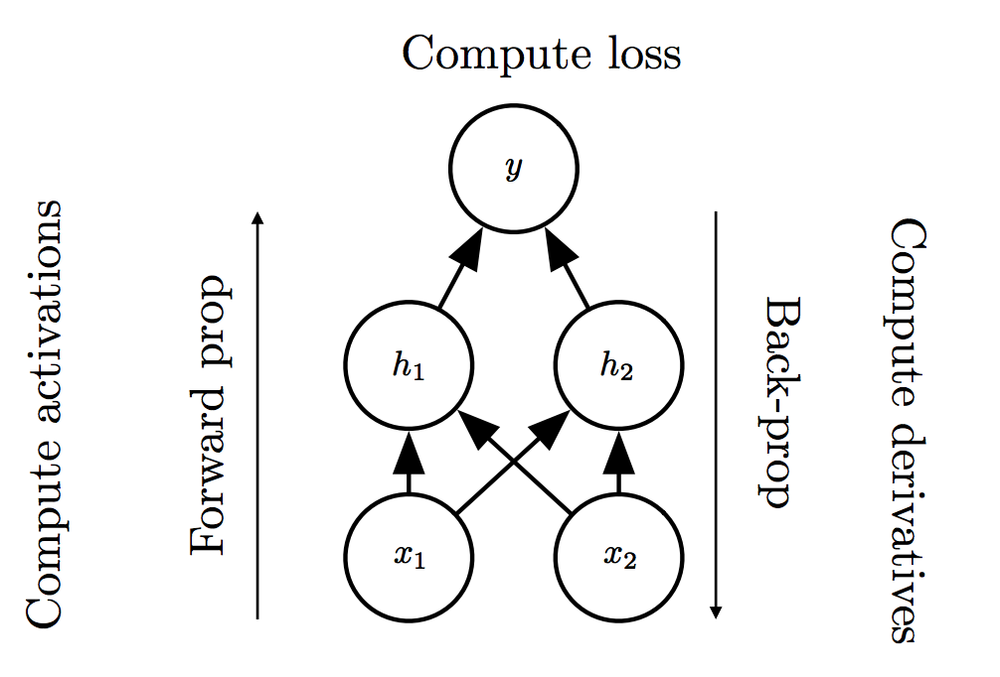
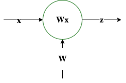
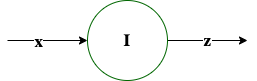
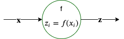
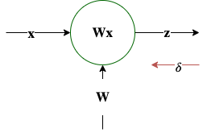
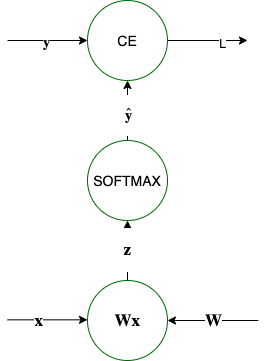
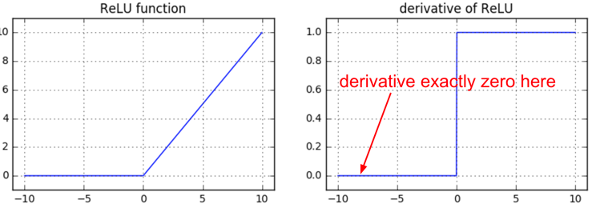

Backpropagation in Deep Neural Networks
Contents
Backpropagation in Deep Neural Networks¶
Following the introductory section, we have seen that backpropagation is a procedure that involves the repetitive application of the chain rule. Let us now treat its application to neural networks and the gates that we usually meet there. In DNNs we are dealing with vectors, matrices and in general tensors and therefore its required to review first how we can expand on the template above for these data types.

DNN Gates¶
In the following we heavily borrow from this text. The basic building block of vectorized gradients is the Jacobian Matrix. In the introductory section we dealt with functions \(f: \mathbb{R}^2 \to \mathbb{R}\). Suppose that we have a more complicated function \(\mathbf f: \mathbb{R}^n \to \mathbb{R}^m\) that maps a vector of length \(n\) to a vector of length \(m\):
Then its Jacobian is:
The Jacobian matrix will be useful for us because we can apply the chain rule to a vector-valued function just by multiplying Jacobians.
As a little illustration of this, suppose we have a function \(f(\mathbf x) = [f_1(x), f_2(x)]\) taking a scalar to a vector of size 2 and a function \(g(\mathbf y) = [g_1(y_1, y_2), g_2(y_1, y_2)]\) taking a vector of size two to a vector of size two. Now let’s compose them to get \(g(x) = [g_1(f_1(x), f_2(x)), g_2(f_1(x), f_2(x))]\). Using the regular chain rule, we can compute the derivative of \(g\) as the Jacobian
And we see this is the same as multiplying the two Jacobians:
This is also another instructive summary that help us understand how to calculate the local gradients involved and the gate templates (identities) summarized below that are routinely found in neural network backpropagation calculations. Assume that with \(\mathbf W \in \mathbb{R}^{n \times m}, \mathbf x \in \mathbb{R}^m\).
Tables of Gates and Gradients used in the backpropagation of deep neural networks
Gate |
Solution |
|---|---|
 |
\(\frac{\partial \mathbf z}{\partial \mathbf x} = \mathbf W\) |
|
\(\frac{\partial \mathbf z}{\partial \mathbf x} = \mathbf W^T\) |
 |
\(\frac{\partial \mathbf z}{\partial \mathbf x} = \mathbf I\) |
 |
\(\frac{\partial \mathbf z}{\partial \mathbf x} = \text{Diag}[ f'(\mathbf x) ]\) |
 |
\(\frac{\partial L}{\partial \mathbf W} = \mathbf \delta^T \mathbf x^T\) |
|
\(\frac{\partial L}{\partial \mathbf W} = \mathbf x^T \mathbf \delta\) |
 |
\(\frac{\partial L}{\partial \mathbf z} = \mathbf{\hat{y}} - \mathbf y\) |
During the lecture we will go through an NN example on the whiteboard that will use these gate gradients for the estimation of the gradient of the loss with respect to its parameters using backpropagation.
Backpropagation through non-linear units¶
As shown here, you need to be watchful of the effects of the various non-linear gates on the gradient flow.
For sigmoid gate, if you are sloppy with the weight initialization or data preprocessing these non-linearities can “saturate” and entirely stop learning — your training loss will be flat and refuse to go down. If your weight matrix W is initialized too large, the output of the matrix multiply could have a very large range (e.g. numbers between -400 and 400), which will make all outputs in the vector z almost binary: either 1 or 0. But if that is the case, \(z*(1-z)\), which is local gradient of the sigmoid non-linearity, will in both cases become zero (“vanish”), making the gradient for both x and W be zero. The rest of the backward pass will come out all zero from this point on due to multiplication in the chain rule.

The ReLU gates, hide under the hood a max operator. The max operation routes the gradient. Unlike the add gate which distributed the gradient unchanged to all its inputs, the max gate distributes the gradient (unchanged) to exactly one of its inputs (the input that had the highest value during the forward pass). This is because the local gradient for a max gate is 1.0 for the highest value, and 0.0 for all other values. Notably, if a neuron gets clamped to zero in the forward pass (i.e. z=0, it doesn’t “fire”), then its weights will get zero gradient. This can lead to what is called the “dead ReLU” problem, where if a ReLU neuron is unfortunately initialized such that it never fires, or if a neuron’s weights ever get knocked off with a large update during training into this regime, then this neuron will remain permanently dead.

Tensorflow can create a computational graph from the DNN model specification (python). These graphs can be visualized on the web UI with Tensorboard. Use the playground when you first learn about DNNs to understand the principles but dive into the Fashion MNIST using Tensorflow use case to understand the Tensorflow mechanics and how to debug Tensorflow python scripts both syntactically and logically. Logical debugging should happen using Tensorboard visualizations. Similarly with Pytorch if this is your framework choice.